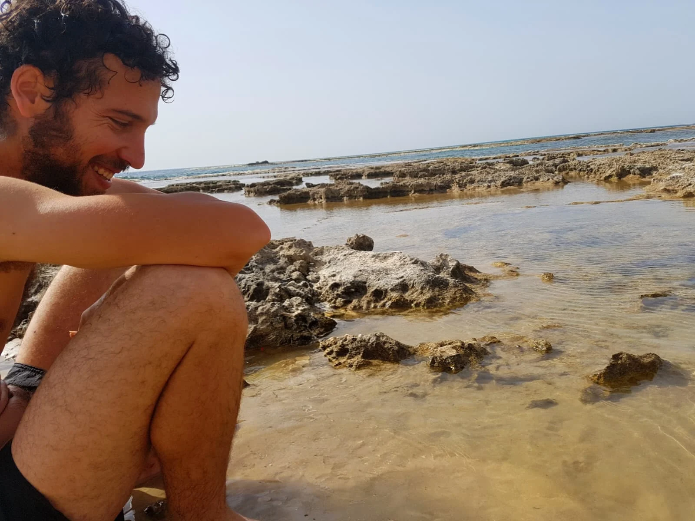
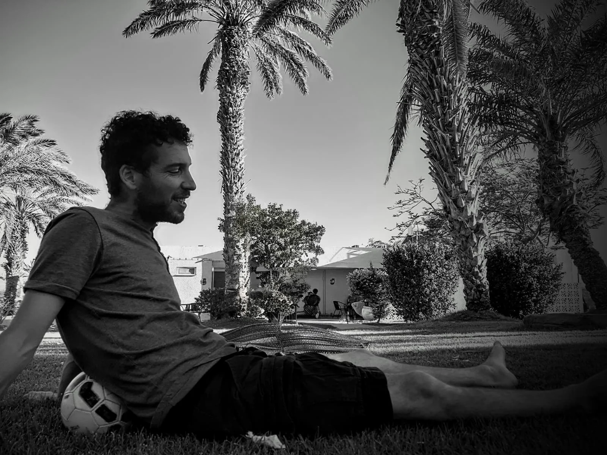
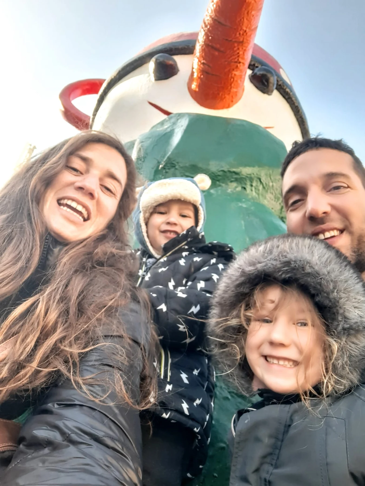
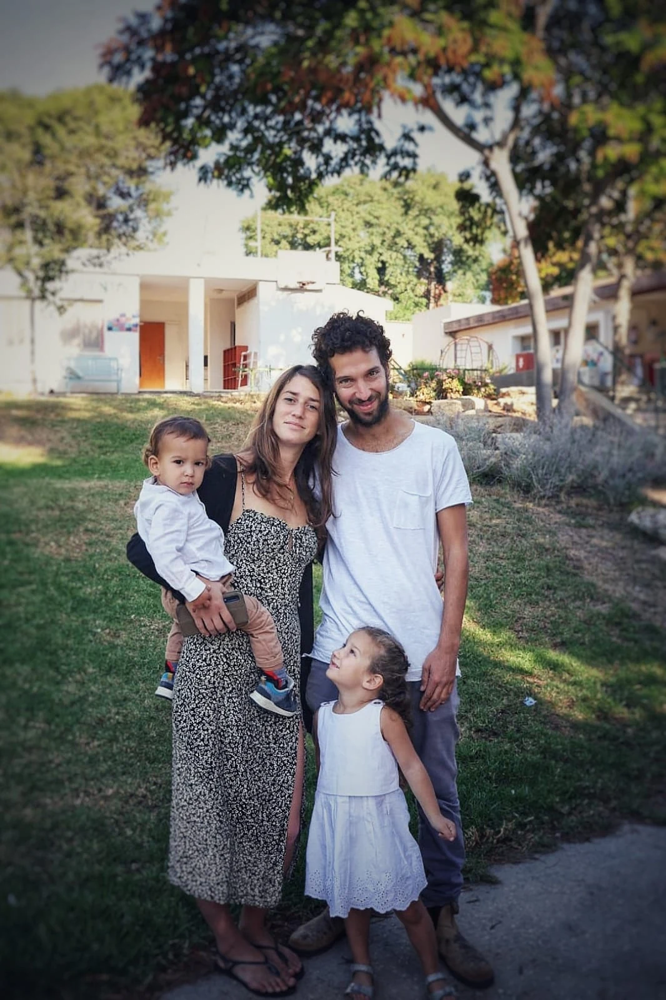
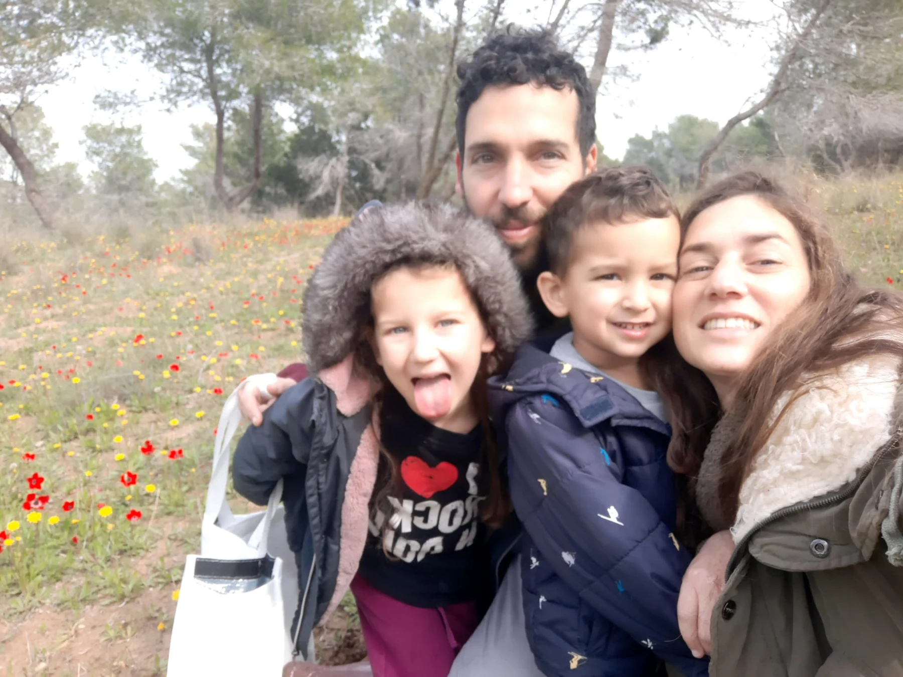
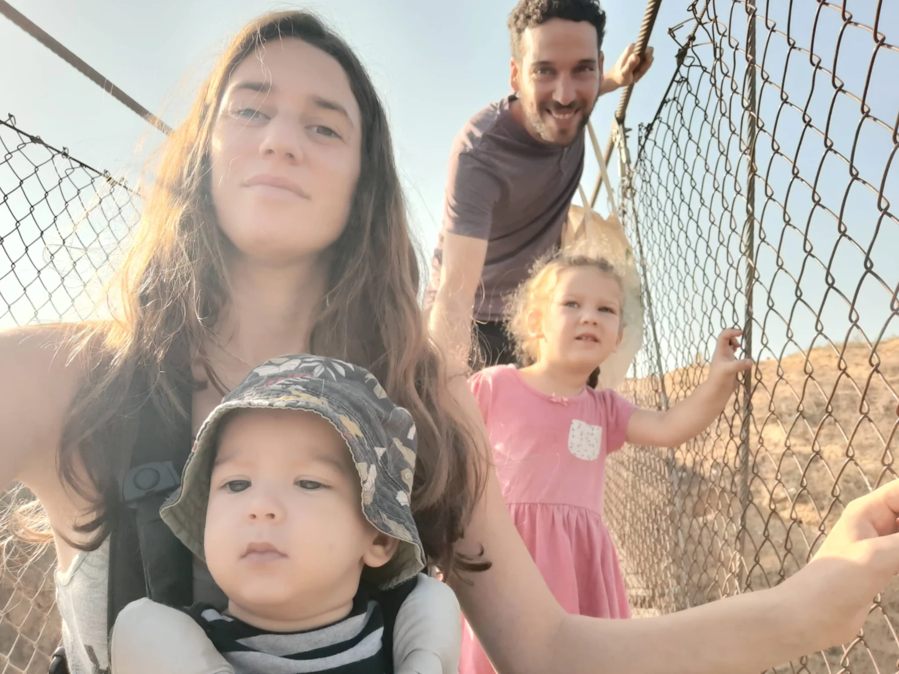
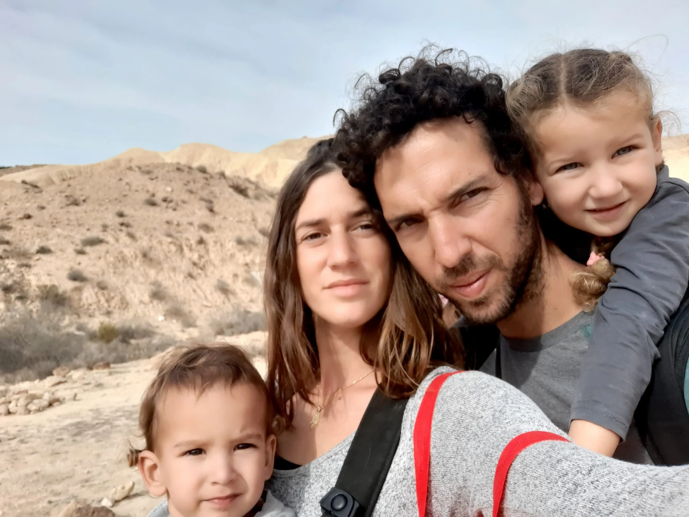

סיפור חיים
בנם של פולי ונפתלי (תוליק). נולד ביום ב' באדר ב' תשמ"ד (6.3.1984) בקיבוץ כפר עזה. אח לדן ולניר.
נדב גדל והתחנך בכפר עזה, למד בבית ספר יסודי מקומי ובתיכון האזורי "בית חינוך שער הנגב". ילד מלא אור, חיוביות ואהבה, שתמיד חייך, שימח את סובביו וסחף אותם באופטימיות שלו.
כשהיה בן חמש-עשרה אביו הלך לעולמו. למרות גילו הצעיר, התמודד עם האובדן בבגרות ועם הזמן הצליח להחזיר לעצמו את שמחת החיים המדבקת שלו.
שלוש שנים לאחר מכן התגייס לצה"ל. אחרי השחרור טייל במדינות רבות בעולם.
כשחזר לארץ, עזב את הקיבוץ לתקופה קצרה של מגורים בקיבוץ הרדוף שבגליל התחתון, שם למד חינוך אנתרופוסופי. בהמשך, חזר להתגורר בכפר עזה.


נדב היה אדם של עבודת כפיים, יצירתי ובעל ידי זהב, אמן שיצר עבודות מדהימות בעץ ובעור ומחנך בחסד עליון.
הוא ראה בטבע ובעבודה עם העץ מרחב בטוח שמאפשר לילדים לצמוח, לפתח יצירתיות ולגלות את עצמם, ופרח כששילב את היצירה והעשייה שלו עם מלאכת החינוך.
ב-2015 התחיל לעבוד בבית הספר היסודי "יחיאל" במושב טל שחר הסמוך לגדרה, שם שימש כמורה לאומנויות העץ וכאב בית האחראי על תחום הבנייה והפיתוח.
"נדב בנה את בית הספר במו ידיו", סיפר יוסי סופר, מנהל שותף בבית הספר. "הקים את כל התשתיות, איפה יהיה הביוב, החשמל והפרגולות, אילו מתקנים ישרתו את הילדים, איפה לשים ספסלים ואיזו צמחייה לשתול. כשהוא הגיע לכאן לא היה פה כמעט כלום, ועכשיו יש עוד מבנים, הסביבה ירוקה ומטופחת".
הקשר שלו עם הילדים היה חזק ומשמעותי. הוא הקשיב להם, התעניין בהם, הכיר אותם לעומק, ועל סמך ההיכרות איתם התאים את העבודה בעץ.
לילדים עם מזג סוער יותר ואימפולסיבי, למשל, נתן לעבוד עם עץ הזית הקשיח, שהציב בפניהם אתגר. לילדים עדינים יותר התאים עבודה עם עץ האבוקדו הרך יותר.
במסגרת העבודה איתו, הילדים למדו להכין כלים שימושיים מעץ. הם האמינו בו, סמכו עליו ואהבו ללמוד ממנו, ורבים מהם העידו שעבדו בשבילו ובגללו, ולא בהכרח בשביל התוצר שקיבלו בסוף. העשייה שלו הייתה מלאה באור ובנשמה, וכך גם שיטת ההוראה שלו. הוא כיבד אותם, לא ויתר להם, אתגר אותם ויצר אצלם מחויבות עמוקה לתהליך, כשם שהיה מסור ומחויב בעצמו לתהליך של כל אחד מהם.
באחד החופשים, לאחר שנגנבו מהסדנה כלי עבודה ויצירות של תלמידים שהיו כמעט לקראת סיום, הזמין את תלמידיו לסדנה על חשבון הזמן הפנוי שלו ודאג שיוכלו ליצור את הכלים שלהם מחדש.


נדב היה איש משפחה מסור ומלא באהבה. הוא נישא לאהבת חייו, ג'סיקה, ויחד הביאו לעולם את רוני ואת דין.
עוד לפני שהפך לאבא, ידע כאדם וכאיש חינוך להבין את נפשם ואת צרכיהם של ילדים. הוא נהג לתת עצות להורים שהיו סביבו ויישם אותן כשהפך להורה בעצמו.
בין היתר, האמין שבשנים הראשונות לחייהם, הילדים פחות זקוקים לחברים, ומה שחשוב הוא לבנות את הביטחון העצמי שלהם, אותו הם סופגים מהבית, מהוריהם ומהשקט הפנימי שהם מקבלים מהם.
הוא עטף את ילדיו באהבה, נהנה לטייל, לשחק ולבלות איתם, והעביר להם את אהבתו לצמחים, לחיות, לאדמה ולעץ.
מגיל צעיר אהב את הטבע, נהנה לחפש פרפרים ולטייל עם מגדיר צמחים, והאמין שבטבע הכי קל להנות, לשמוח, לפרוק ולקבל רעיונות ליצירה חדשה.
הפעילות האהובה עליו הייתה ליקוט פטריות אחרי הגשם. היה לו סל קש מיוחד, מספריים וסכין, הוא נהג ללקט פטריות מיוחדות, וצירף לליקוט את ילדיו ולעיתים גם את ילדי הגנים בקיבוץ.
מחוץ לבית שתל דשא ירוק, בנה פרגולה מרשימה וטיפח יחד עם ילדיו גינת ירק מפוארת. בנוסף, העביר סדנאות במרחב היצירה "ביתמלאכה" שבשער הנגב, והוביל מגוון פרויקטים בקיבוץ, בהם יצירת בר העץ בספרייה ובניית השוקת בבוסתן, שאותה עיטרו התושבים בפסיפס.


חבריו הרבים מתארים אותו כאדם מלא אהבה, שתמיד ראה את הטוב, לא מצא סיבה ששווה לכעוס בגללה וידע לפתור כל בעיה בחיוך. בעל נפש עדינה ונדיבות בלתי רגילה, שהגיב בחיוב לכל בקשת עזרה שהופנתה אליו, וגם אם הייתה מאתגרת או לא נוחה אמר: "בטח, בשמחה".
בכל מקום אליו הגיע, היה אהוב על ילדים ומבוגרים כאחד, והותיר חותם בלבבותיהם. סביבו תמיד היו הנאה וצחוק, והקסם המיוחד שלו שילב בין רצינות לשובבות, בין עומק לקלילות, בין סבלנות לתושייה.
יחד עם ג'סיקה ועם חבריהם נהג לצאת למסיבות ונהנה לרקוד, להשתולל ולבלות, מלא בשמחת חיים טהורה.
הוא היה בטוח במי שהוא, בעל עמוד שדרה חזק, אמיתי ותמיד אמר את שעל ליבו. הייתה לו יכולת להנות מהדברים הפשוטים ולהעריך אותם, ובכל רגע בחייו ידע לעצור, להתבונן במה שיש ולהוקיר על כך תודה.
ערב לפני כן, נדב בילה עם משפחתו בסעודת החג אצל הוריה של ג'סיקה בקיבוץ דורות. לקראת לילה, המשפחה נותרה בדורות והוא חזר לביתם כדי לטפל בטאיו, הכלבה.
בבוקר שבת התעורר לשמע האזעקות וקולות המלחמה, ובמחשבה שמדובר בסבב רקטות נוסף, תכנן לצאת חזרה לדורות.
הוא הספיק לשאול את ג'סיקה מה להביא לה מהבית, אבל אז קיבל הודעה מכיתת הכוננות של הקיבוץ, שבה היה חבר, על חדירת מחבלים. בלי לחשוב פעמיים, יצא לכיוון הנשקייה על מנת להתחמש ולהילחם, והיה מהראשונים לחתור למגע. בדרך הספיק להזהיר חבר ולתת לו תחמושת.
הוא הגיע אל הנשקייה ואיתו חברים נוספים מכיתת הכוננות, ומיד כשהגיעו נפתחה לעברם אש כבדה מאחד המבנים הסמוכים, בו ארבה חוליית מחבלים. שניים מחברי כיתת הכוננות נפגעו, נדב רץ לפנות אותם מקו האש ולהעניק להם עזרה, אך נורה גם הוא ונהרג.
רב-סמל ראשון נדב עמיקם נפל בקרב ביום כ"ב בתשרי תשפ"ד (7.10.2023). בן שלושים ותשע בנופלו. הובא למנוחות בחלקה הצבאית בבית העלמין בכוכב מיכאל. הותיר אחריו בת זוג, שני ילדים, אם ושני אחים.
לאחר נפילתו הועלה לדרגת רב-סמל מתקדם.
ג'סיקה, אשתו, פרסמה סרטון של נדב מהערב לפני שנפל וכתבה: "זה התיעוד האחרון של נדבי, ערב שישי בקיבוץ דורות, עיר האוהלים מסיבת ילדים. בין כל הילדים והאימהות שרוקדות, האבא של הילדים שלי, אהובי, מקפץ עם הילדים ורוקד כאילו אין מחר. ככה אני רוצה שתזכרו אותו. אדם שאוהב שמחות, שרוקד עד שכואבות לו הרגליים (וגם אז הוא עוד ממשיך לרקוד), האבא הכי טוב שכל אישה הייתה רוצה בשביל הילדים שלה, איש חינוך ואיש משפחה, איש של אהבה... נדב הוא הגיבור שלנו".
